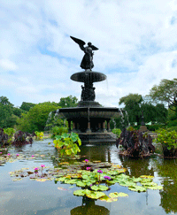
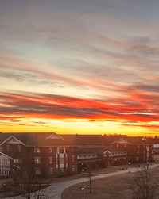
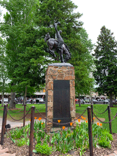

Cody Witmer's Photography Project

Student at Millersville University
This is my Photography Project. We were tasked to take various pictures and then edit them in photoshop. Different photography styles and editing techniques were used to achieve a good blend and variety of pictures.
I started out by taking pictures on campus as well as finding some good pictures I took in Yellowstone, Wyoming. After selecting all my pictures I brought them into Photoshop and made my edits to them. Finally I added all my images into InDesign and making a before and after graphic that explained all my work. Seen below are a few examples of my finished pictures.



© 2025 Cody Witmer